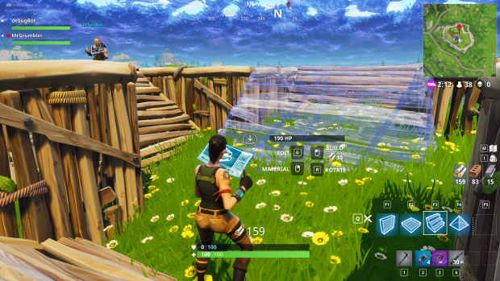

Fortnite reprend le principe des jeux battle royale dont l'objectif est d'être le dernier survivant, peu importe le moyen, en éliminant les joueurs adverses ou en se cachant.
Au début de chaque partie, les joueurs attendent tous dans un bus volant qui survole l'île, puis ils choisissent un point d’atterrissage sur l'île à l’aide de la carte de jeu, cherchent des armes, des soins et des objets comme les bombes ou les pièges, puis peuvent commencer à aller se battre ou bien à rester caché suivant leur stratégie.
En effet, le but du jeu est de rester le dernier en vie, on peut donc décider d'attendre que les ennemis meurent puis éliminer l'avant dernier joueur, dans le but de faire "Top 1".
La meilleure façon pour gagner est donc d'avoir le meilleur "stuff", comprenant armes et matériaux. Les armes sont les objets les plus importants car elles permettent d'éliminer les adversaires pour survivre et faire "top 1", et donc d'être le dernier survivant des 100 joueurs. Il faut donc séléctionner minutieusement ses armes. Ils en existent un bon nomres, chacune servant dans des situations différentes: fusil a pompe a courte portée, fusil d'assault a moyenne portée, sniper a longue portée, ou encore lance-roquette pour de lourd dégâts de zone. Chaque arme possède une rareté symbolisée par une couleur: gris pour commun, vert pour non commun, bleu pour rare, violet pour épique,et enfin jaune pour légendaire. Plus l'arme est rare, plus ses statistiques sont fortes. Il faut donc s'équiper pour faire face a chaque situation, de préference avec des armes rares, mais on ne peut pas tout prendre car la limite d'équipement est de 5.
La particularité qui démarque fortnite des autres battle-royale est une méchanique de jeu unique et innovante: les constructions. En effet, les joueurs peuvent ramasser des matériaux comme du bois, de la pierre ou du métal pour ensuite construire leur propre barricade. Il y a quatre types de construction possible: les murs, utile pour se couvrir d'un assaut ennemis, les escalier, utile pour prendre la hauteur sur ses adversaires, le sol pour relier les constructions, et le toit, qui ne sert qu'a très haut niveau. Mais la construction ne s'arrête pas la. On peut aussi modifier nos constructions pour faire une fenêtre, permettant de tirer en restant couvert, des portes, etc. C'est pour cela que le jeu fait un carton et qu'il continuera a en faire, car le potentiel est infini, il suffit juste de s'entrainer pour devenir meilleur. Et cela en vaut la peine puisque le cashprize des worlds était de 3 millions de dollars pour le gagnant.